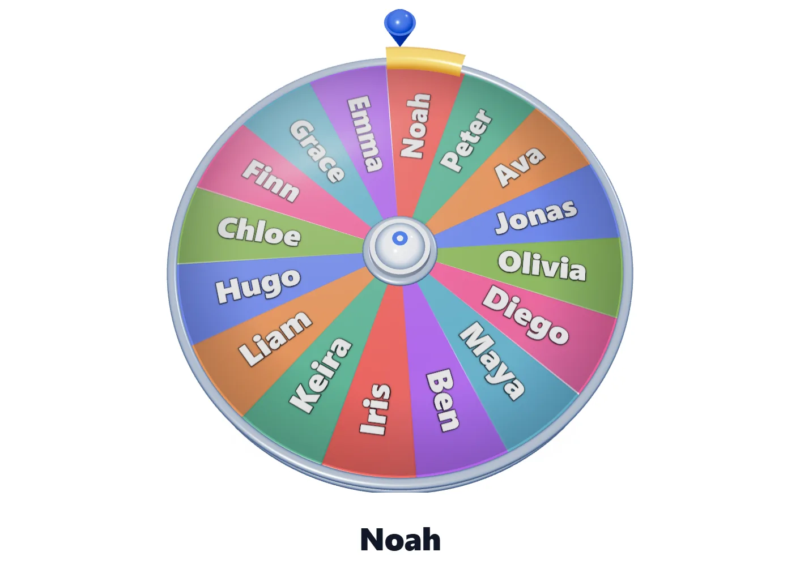

Home › How to pick a student at random
How to pick a student at random without the drama
Picking a student at random sounds trivial, but in a class of 30 it often starts an argument: someone feels always hit, someone feels the choice was unfair. This page compares the five ways teachers draw a name and shows which is fastest and hardest to argue with.
Open the name wheel now free, no sign-up, works offline

Five ways to pick a student, and what goes wrong
| Method | Strength | Problem |
|---|---|---|
| Folded paper slips | No equipment needed | 3–5 minutes, slips get lost, names get skipped |
| Calling a roll number | Fastest | Very easy to read as unfair |
| Name wheel app | Quick, the class sees it | Needs a phone or a projector |
| Shuffled name cards | Feels “real” | Needs physical cards, hard to repeat |
| Random number generator | Fair | Students must know their roll number |
The problem is rarely the tool, it is trust. A method whose process stays hidden gets suspected. So the one that draws the fewest objections shows the process: the wheel spins at the front of the room and the class watches the names turn before it stops.
The option nobody argues with: a name wheel up front
Paste the list once, then spin. The wheel stops on its own and the winner appears in large text, readable from the back row. The result comes from the browser’s cryptographic random generator, not the list order.
Try the wheel right here
Paste one name per line, press Spin, and the wheel stops on a single name.
The tool works right away — no need to leave the page. On narrow screens, open it in a full tab.
Four steps to use it in class
- Prepare the name list. Paste from your class list, one name per line. It is saved in the browser, so no retyping tomorrow.
- Show it on the projector (optional). It works on a phone and on a classroom projector.
- Spin and let it stop. Do not stop it by hand — the slowdown is what makes the result feel legitimate.
- Share the result. Press “Share result” to send a winner card to the class chat, so nobody can claim the outcome was edited.
Three situations that come up most
The same student comes up twice. Normal, and proof the draw is random. To give everyone a turn before anyone gets a second one, remove a name once the wheel stops. With 30 names, the class gets through everyone in 30 spins.
Someone has never been picked. Split the class into two lists, already had a turn and not yet, and spin only the latter. That protects feelings without changing the randomness.
A room with no projector. Spin on the phone, then turn the screen toward the class as the wheel slows. The winning name is large enough to read from a few yards away.
If you would rather not use an app
A fair manual method still exists: write every name on a slip of the same size, fold them, drop them in a box, shake it in front of the class, ask a student to draw one. The key is the same: the process has to be visible. Never pick someone “in your head” and call it a draw.
Frequently asked questions
Does a draw made with an app feel fair to students?
Fairer than pointing: the class watches the process. The wheel spins in front of them and stops by itself, so nobody can accuse the teacher of choosing.
What if one student keeps coming up?
That is what random looks like. For an even rotation, remove a name once the wheel has stopped on it.
Do I have to retype the list every day?
No. The list is stored in the browser you use, so you paste it once.
Do I need internet to draw a name?
No. Once the page has opened, the wheel runs from the browser cache and keeps working when the signal drops.
How many names can I paste in?
No hard limit. Up to 20 names the labels fit two lines; above that they are shortened so the wheel does not fill up.